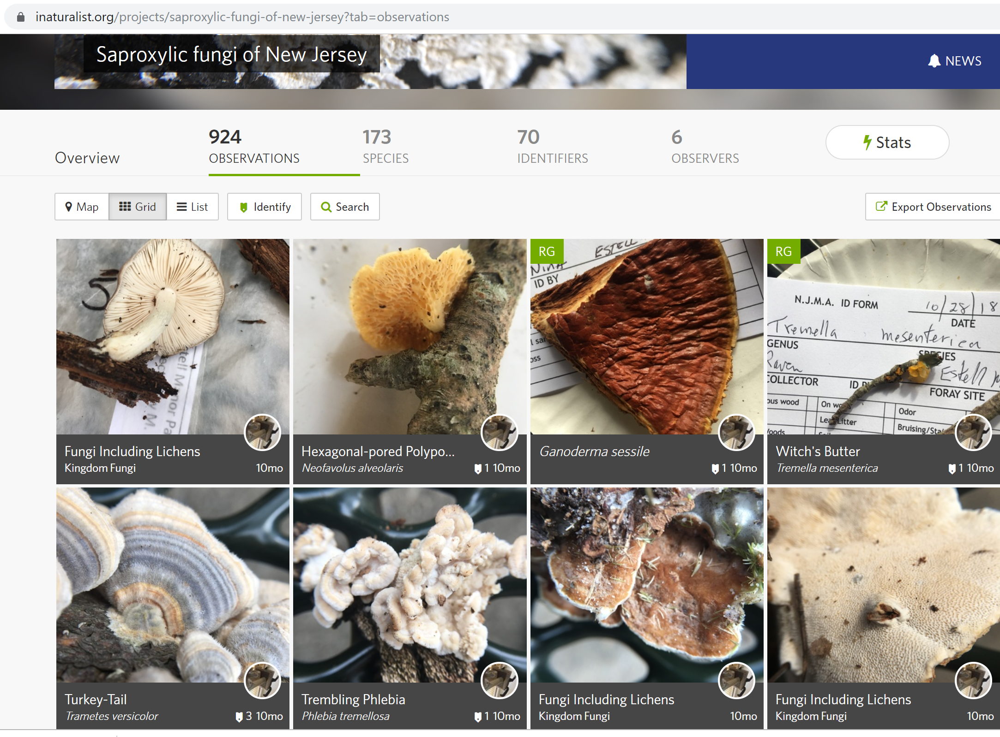
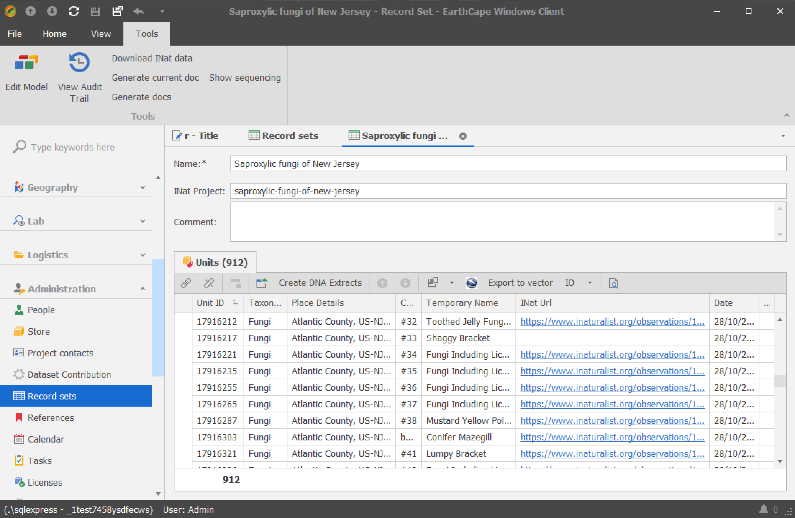
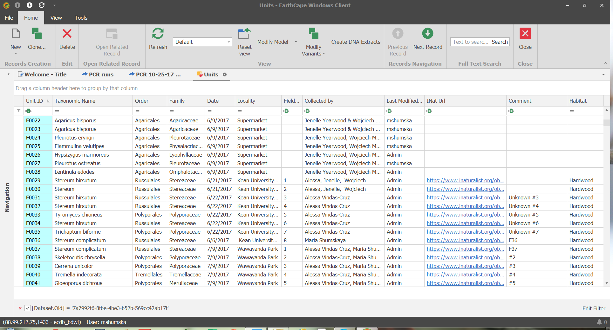

INaturalist https://www.inaturalist.org/
This integration is in testing mode and will evolve according to user requests
Use case
Collect field data via INaturalist and download to research database
INaturalist Project is equvalent to EarthCape Record set in relation to EarthCape Units that can be linked to several record sets similar to INaturalist projects.
Example INaturalist project: 
Record set is assigned an INaturalist project stub or code and data is downloaded:

INaturalist records are now EarthCape units and can be further worked on within the database: 
Fields
- Unit.INatId
- Unit.INatUrl
- RecordSet.INatPorject
Actions
- Record Set -> Download INat data (downloads INaturalist observations for a project stub/code specified in RecordSet.INatPorject field as Unit records and attaches them to selected Record set)
- Unit -> Download INaturalist (downloads INaturalist observation data into a selected Unit record if it has INaturalist observation id specified in Unit.INatId)
- Unit -> Upload to INaturalist. API token has to be added to EarthCape settings.To retrieve your token at https://www.inaturalist.org/users/api_token after logging in to INaturalist.
Fields downloaded
- Unit.UnitID (id) if empty or new
- Unit.INatId (id)
- Unit.Date (observed_on)
- Unit.TaxonomicName (iconic_taxon_name) - matches existing names in the database. If Empty.
- Unit.TemporaryName (species_guess). If Empty.
- Unit.Latitude (latitude)
- Unit.Longitude (longitude)
- Unit.PlaceDetails (place_guess). If Empty.
- Unit.Comment (description). If Empty.
- Unit.INatUrl - generated
- Unit.Attachments (photos)
- UnitAttachment.INatID (photo id)
- UnitAttachmen.JpegUrl (original photo url)
Fields uploaded
- Unit.TaxonomicName
- Unit.Date
- Unit.Comment
- Unit.PlaceDetails
- Unit.Latitude
- Unit.Longitude